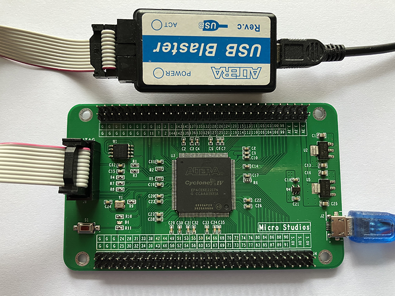

F1 Board

F1 Intel (Altera) FPGA Board
The F1 board is developed by Michael HU for his Verilog on Intel (Altera) FPGA Lessons.
It has one Cyclone EP4CE6 FPGA, one W25Q64 64Mb serial NOR flash, one LED, One key, and two 30x2 output pins interface.
This set includes one USB Blaster JTAG tool and one Micro-USB power supply cable. It can be shipped around the world. You can drop an email to “micro at micro-studios.com” (replace at with @) to enquire the price and shipping matter.